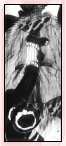

| » vs. Sound Shinobi ;
Lee's dual with the Sound shinobi occurs during the second part of the Chuunin Exam, mainly because he was coming to Sakura's rescue. Having only seen the Sound shinobi's attack once before, he is smart enough to realize that their attacks are not on speed alone. Tricks are involved, and Lee knows not to let them come close. We first see a version of the Omote Renge here, but unfortunately the effect was minimized due to another Sound shinobi's interference. He was forced to suffer the effects of a Sound shinobi's vibration attacks while protecting Sakura. Although the shinobi expected him not to move for a while, he was still speedy enough to reach Sakura and take attacks for her. With this dual, Lee changed Sakura's thoughts of him as well as inspired her to become a better, stronger ninja. Although he was up against 3 experienced shinobi, he refused to show a single trace of fear. He was knocked out later and was unable to finish the fight. However, Tenten commented that if he were to dual fairly, Lee would have won with little effort. « reverse |
PRELUDE GENERAL Naruto Terms Chakra LEE First Glance Personality Techniques Fighting Style Transition Weaknesses Analysis RIVALRY vs. Sasuke vs. Neji vs. Gaara vs. Sound vs. Kimimaro RELATIONS Maito Gai Teammates Sakura Naruto EXTRAS Symbolism Seiyuu Quotations References EDEN Reasons Images Wallpapers Fanworks Graphics EPILOGUE Updates Linkage Credits Joined Contact Guestbook |